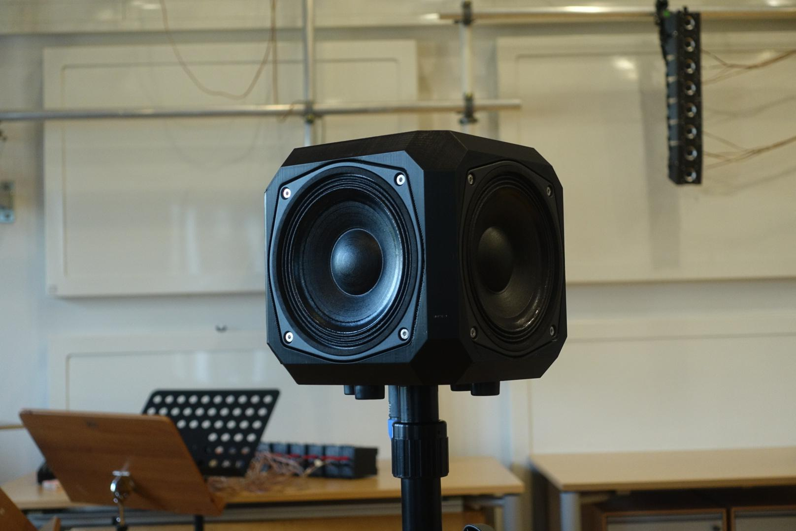
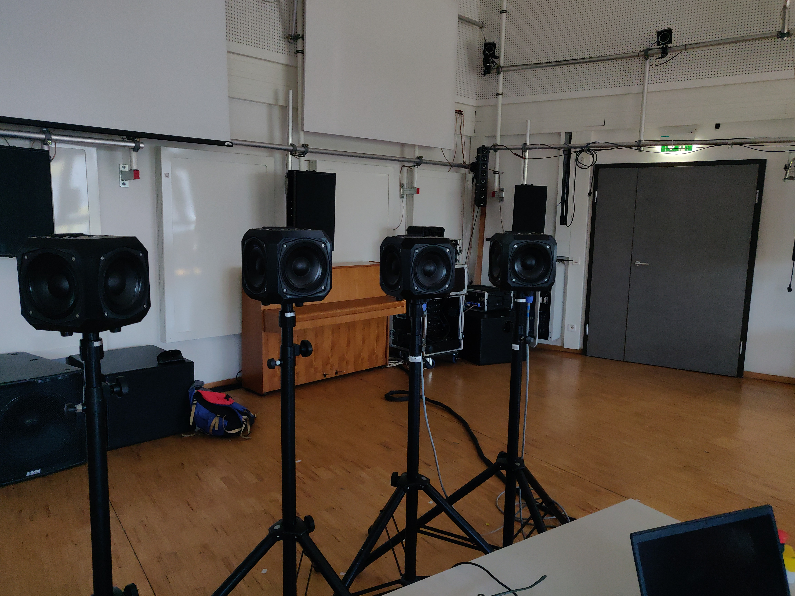
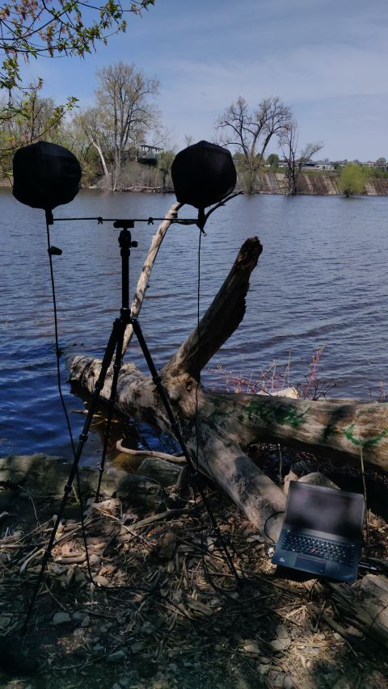
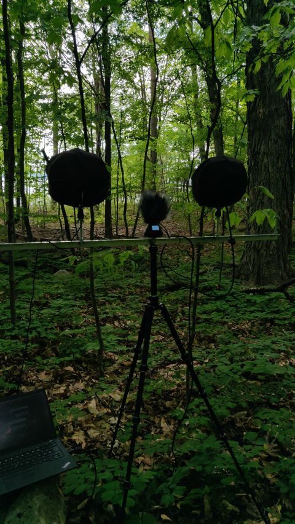

Projects
Voxel - Loudspeaker System
The Voxel system consists of four cube-shaped loudspeakers, each equipped with four 6-inch drivers rated at 120 watts. These can be arranged in a circle around the audience so that four drivers radiate sound toward the audience, four create reflections off the walls, and four play directly into the corners of the room. This creates a combination of direct and diffuse sound that is not possible with standard speakers. The four drivers also allow for the simulation of the complex radiation patterns of instruments that emit sound in different directions at different frequencies. Consequently, one or more of these speakers can be combined very effectively with instruments, as the acoustic behavior blends more seamlessly. The Voxels can be used individually as sound objects or combined to form a ring. A smaller 4-inch version of the Voxels can also be added to add height information by suspending a speaker in the center from the ceiling or mounting it on a tall tripod.


Research on Spaced Spatial Array in the Context of Field Recordings
Based on the research of Florian Grond et al. I conduct currently research on the use of spaced spatial arrays in the context of field recording. I want to find out how the use of spaced spatial arrays can improve spatial depth and envelopment of the recordings.


GitHub Repository
On my GitHub profile I organize various repositories of my projects. These include Python scripts for the analyzes of Bird songs in Field Recordings, an Impulse Response analyzer and a number of JSFX scripts for Reaper for the work with multichannel audio.